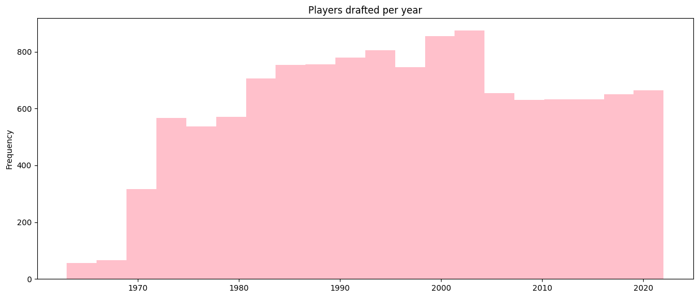
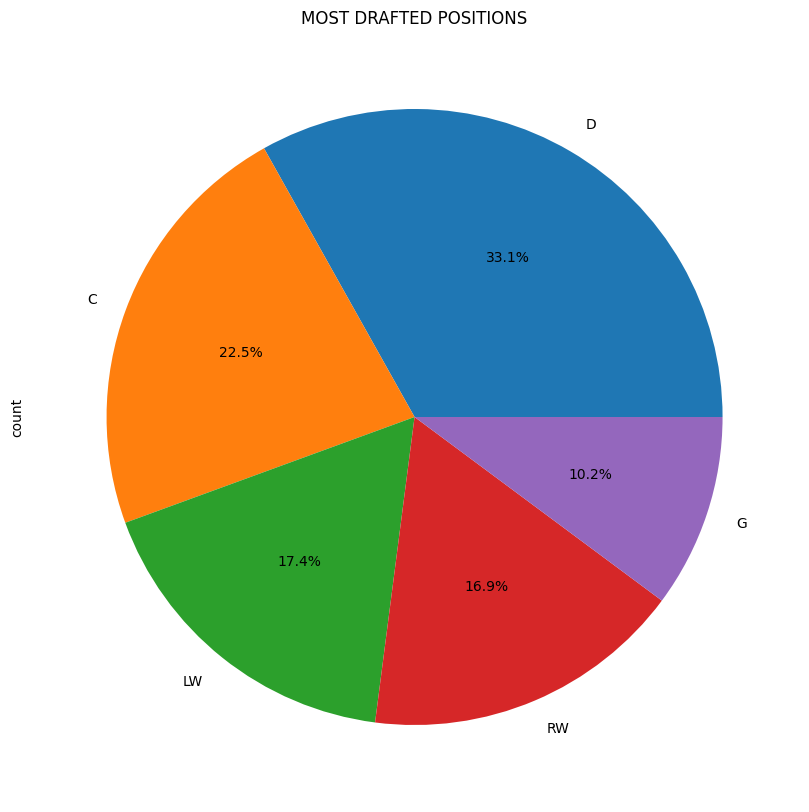

NHL Analysis (1963 - 2022)

This is my very first project using pandas and matplotlib altogether. In this entry, I will show some analytics I made with this database. Shoutout to OP for the dataset!
Import the libraries and .csv file
import pandas as pd
import numpy as np
import matplotlib.pyplot as plt
df = pd.read_csv('nhldraft.csv')
df.head()
id
year
overall_pick
team
player
nationality
position
age
to_year
amateur_team
...
points
plus_minus
penalties_minutes
goalie_games_played
goalie_wins
goalie_losses
goalie_ties_overtime
save_percentage
goals_against_average
point_shares
0
1
2022
1
Montreal Canadiens
Juraj Slafkovsky
SK
LW
18.0
NaN
TPS (Finland)
...
NaN
NaN
NaN
NaN
NaN
NaN
NaN
NaN
NaN
NaN
5 rows × 23 columns
Players drafted by age
ax=df['age'].plot(kind='hist',ylabel='Q',xlabel='age',bins=20,color='pink',title='PLAYERS DRAFT AGE')
#-- axis name change --
ticks = np.arange(df['age'].min(), df['age'].max()+1,2)
ax.set_xticks(ticks)
[GRAPH 1] Bar chart of players draft age
As expected, most of these guys are 18 years old. You can also see that a few players were younger than 18 - these correspond to the years 1955-1967, before the Junior Hockey regulations changed to set the age range to 18-20 for Canadian and American players, and 18–21 for international players. You can read more about this here.
Teams with less and most players drafted.
#-- less --
df['team'].value_counts().nsmallest(15).plot(kind='barh',figsize=(10,10),title='TEAMS WITH LESS PLAYERS DRAFTED',color='pink')
#-- most --
df['team'].value_counts().nlargest(6).plot(kind='barh',figsize=(10,10),color='pink',title='TEAMS WITH MORE PLAYERS DRAFTED')
[GRAPH 2] Bar char of teams with less players drafted
Still not a very surprising result — the teams that drafted the fewest players are the newest franchises (such as the Kraken, the Vegas Golden Knights, and the Minnesota Wild), as well as teams whose franchises are no longer active.

[GRAPH 3] Bar char of teams with more players drafted
Here, I purposely created a Top 6 to see whether all the "Original Six" teams would appear - but surprisingly, they didn’t. The Leafs barely made the list, and the Flyers ended up taking the Bruins’ spot instead.
The Flyers ranking so high reflects their drafting approach during the 80s and 90s, where they accumulated more mid-round picks than most Original Six teams. Of course, drafting many players doesn’t necessarily mean drafting successful players.
The gap between the Leafs and the top teams is also smaller than expected, showing how consistent their draft activity has been across decades despite mixed on-ice results.
Overall picks analysis
#-- top 5 countries with drafted players--
df['nationality'].value_counts().nlargest(5).plot.pie(autopct='%1.1f%%',figsize=(10,10),title='Top 5 countries with more players drafted')
#-- Q of players drafted per year --
ax=df['year'].plot(kind='hist',bins=20,figsize=(15,6),color='pink',title='Players drafted per year')
#-- top drafted positions --
players= df[df["position"].notna()].copy()
positions = players["position"].value_counts()[GRAPH 4] Top 5 countries with more players drafted
Of course, Canada is the country with most players drafted. Followed by the United States, we can see that Sweden has more players than Russia. This could be because of the development of the KHL (Russian profesional Hockey League developed in the 200's). Meanwhile, Finland takes fifth place.
[GRAPH 5] Playeres drafted per year (1963 - 2022)
In the 1990s, the number of players drafted increased exponentially until it dropped in 2006–2007. This happened because the number of draft rounds decreased from 9 to 7.
[GRAPH 6] Pie chart of drafted positions
Not so many surprises here. The fowards takes 56.8% in total.
Bivariate analysis of overall picks vs games played
#--overall picks vs q games played--
plt.figure(figsize=(10,6))
plt.scatter(df['overall_pick'], df['games_played'], alpha=0.5, edgecolors='black')
plt.xlabel('OVERALL NUMBER PICK')
plt.ylabel('Q GAMES PLAYED')
plt.title('DRAFT POSITION AND GAMES PLAYED')
plt.grid(True, alpha=0.4)
plt.show()[GRAPH 7] Bivariate scatter plot of draft position and games played
Top 10 players with more PPG.
#-- top 10 players with more points per game--
df['points_per_game'] = df['points'] / df['games_played']
#filter
min_games = 200
df0 = df[(df['overall_pick'] <= 50) & (df['games_played'] >= min_games)]
#label year and draft
df0['label'] = df0['player'] + "(Draft " + df0["year"].astype(str) + ", " + df0['overall_pick'].astype(str) + " pick" + ")"
#graph
ax=df0.set_index('label')['points_per_game'].nlargest(10).plot(kind='barh',figsize=(12,6),xlabel='points',ylabel='player',color='pink',title='TOP 10 PLAYERS WITH MORE POINTS PER GAME (1963 - 2022)')
[GRAPH 8] Bar char of the players with most points per game.
Following the previous analysis, we can see that most of the players featured here were drafted within the top 50 picks. Highly successful players tend to average at least 1 point per game. Additionally, Crosby and McDavid are the only active players in the top, while the rest are already retired. Both Crosby and McDavid continue to increase their scoring totals, which may further solidify their positions over time.
I had to filter some outliers with players that played only a few games and achived points in those. For example, John English played just one NHL game and registered a point, which would have placed him among the top scorers.
Note: Wayne Gretzky (Aprox. 1.92 PPG) is not included because he was never drafted. Hense, he doesn't appear in the draft-based dataset used for this analysis.
Goalies: Win vs losses
#not goalies out
goalies = df[df['save_percentage'].notna()]
plt.figure(figsize=(10,6))
sc = plt.scatter(goalies['goalie_losses'],goalies['goalie_wins'],c=goalies['save_percentage'],cmap='viridis',edgecolors='black',alpha=0.8)
plt.colorbar(sc, label='Save Percentage')
plt.xlabel('Losses')
plt.ylabel('Wins')
plt.title('Goalies: Wins vs Losses')
plt.show()[GRAPH 9] Colorbar map of wins and losses of goalies
There is a positive relationship between wins and losses, mostly driven by how long each goalie played. High save percentages are associated with some of the top-performing goalies, but even goalies with strong saving rates can accumulate losses simply due to long careers. Most players stay in the low-win, low-loss region, indicating shorter NHL careers.
A small insight into the Toronto Maple Leafs
#--insight for the leafs drafted players--
leafs = df[df['team'] == 'Toronto Maple Leafs'].copy()
team_yearly = leafs.groupby('year')['points'].sum()
ax = team_yearly.plot(figsize=(12,6),marker="o",title='TORONTO MAPLE LEAFS – TOTAL POINTS MADE BY DRAFTED PLAYERS',grid=True,color='blue')[GRAPH 10] Leafs drafted players performance through the years.
I wanted to make a breef insight into the team I root for, the Leafs. We can see that the leafs drafted good players between the 1960s and the 1980s. There is a clear peak around 1967 (The year of their last Stanley Cup) which reflects strong draft classes that produced long-term NHL contributors.
However, from the late 1990s onward, total point production drops noticeably, suggesting a period of inconsistent drafting and a lack of elite talent development.
By the 2000s, several draft classes produced few or no NHL-level players. This aligns with the fact that the Leafs frequently traded away draft picks or relied more heavily on acquiring established players rather than developing their own prospects. Following this, it would be valuable to analyze the Marlies' performance during these years to understand how player development was affected.
Overall, the data supports the narrative that Toronto’s drafting success has fluctuated significantly, with the franchise showing strong results in earlier decades and more modest outcomes in the modern era.
Conclusion and Next Steps
This was my first project using Pandas and Matplotlib, and it was a great learning experience. Exploring NHL history through data helped me understand several interesting patterns and irregularities of this sport I recently picked up. It made the process very enjoyable.
I recently learned that many NHL game prediction models struggle to reach even 70% accuracy. With this in mind, my next goal is to begin developing my own predictive model for NHL games and continue expanding my skills in data analysis and machine learning.
Thanks for reading! Let's go Leafs!